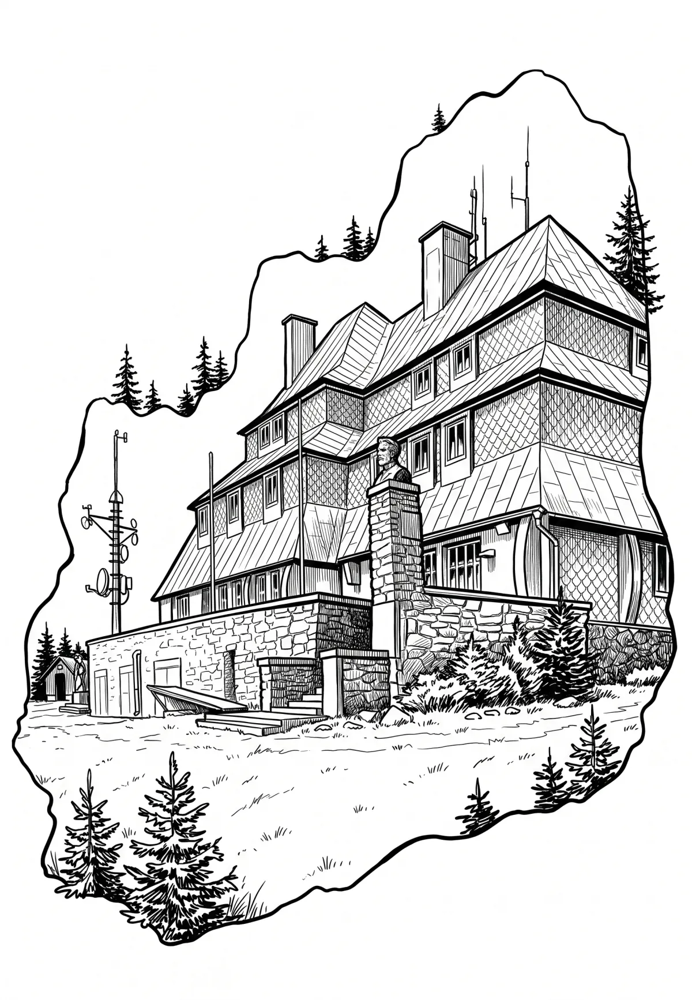

Masarykova chata na Šerlichu
Masarykova chata (také Chata Šerlich) je horská turistická chata pod vrcholem Šerlich v Orlických horách v nadmořské výšce 1 019 m těsně u česko-polských hranic, v CHKO Orlické hory, 3,5 km severovýchodně od Deštného v Orlických horách. Od roku 1958 je stavba chráněna jako kulturní památka České republiky. V blízkosti se nachází přírodní rezervace prales Bukačka.
Více na Wikipedii